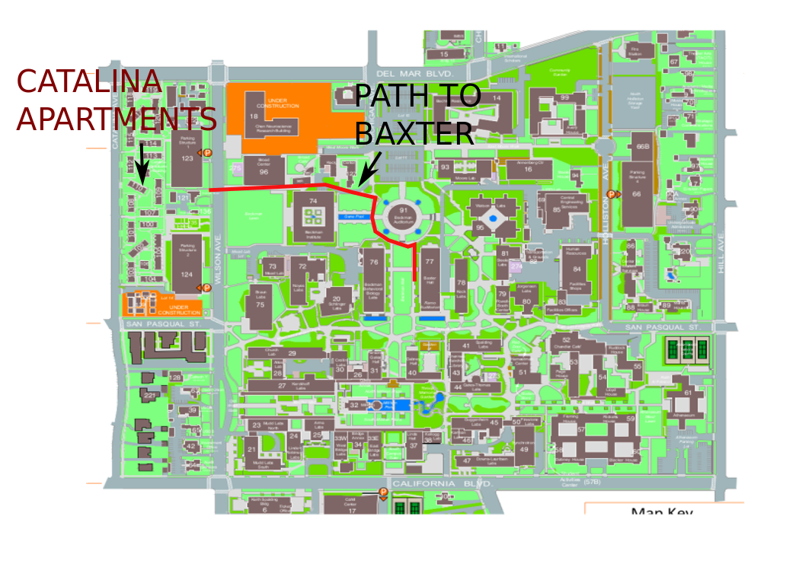

Location
Room B125, in the basement of Baxter
The stairs to the basement will be directly in front of you as you enter through the front door of Baxter.

Schedule
Part I: Refresh fundamentals
Tuesday Sept. 3 - Friday Sept. 6
10 AM - NOON, 1 PM - 3 PM
Part II: Refresh advanced material
Monday Sept. 9 - Friday Sept. 13
10 AM - NOON, 1 PM - 3 PM
- Advanced analysis (notes)
- Advanced probability
- Constrained optimization (notes)
- Convex analysis
Part III: Programming
Monday Sept. 16 - Wednesday Sept. 18
10 AM - NOON, 1 PM - 5 PM
- Basic programming
- Python
- R
- Latex
- Beamer
Mystery data for group project